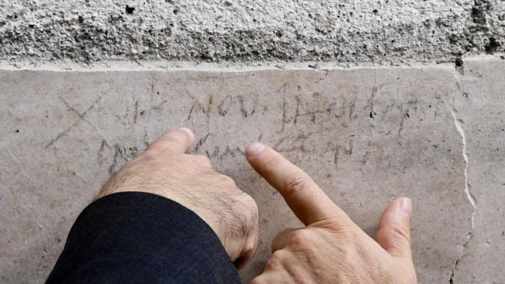

Помпеи – погребенный город
Настоящая дата извержения Везувия
На стене одного из домов города, в котором проводились недавние раскопки, обнаружена надпись, которую, возможно, сделал углем рабочий, ремонтировавший постройку. Надпись гласит, что до ноябрьских календ по старому римскому календарю остается 16 дней. В современном летоисчислении это означает, что запись сделана 17 октября [2].
Археологи считают наиболее вероятной датой извержения 24 октября.
Тем временем Плиний Младший наблюдал катастрофу с другого берега Неаполитанского залива: «Я правдиво описал вам то, чему я стал очевидцем сам или о чем узнал сразу после катастрофы, что я записал сразу, прежде чем время исказило истину» [12].
Однако археологи давно высказывали некоторые сомнения в датировке Плиния, так как в развалинах погибших городов они находили жаровни с углями, которые использовались для отопления, а также осенние фрукты.
Находка надписи, сделанной углем, подтверждает эти сомнения.
Письмо, написанное Плинием Младшим Тациту, было написано спустя примерно 20 лет после извержения 79 г. Оригинал и снятые самим Плинием копии не дошли до нас.
Современное прочтение текста этого письма основано на переводах и транскрипциях, сделанных за минувшие века. Известно, что различные копии писем Плиния содержат разные даты: от августа до ноября. Различия в датах легко объясняются возможной путаницей между древним и современным календарями.
Открытие было сделано на новых раскопках в районе Реджио-V, которые ведутся на ранее остававшихся неисследованными улицах мертвого города [2].
Таким образом, настоящая дата извержения – 24 октября.
Галерея